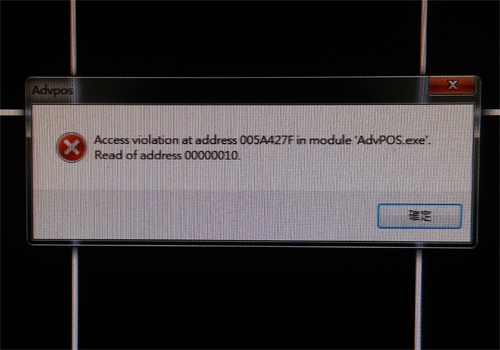
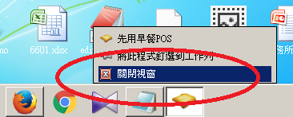
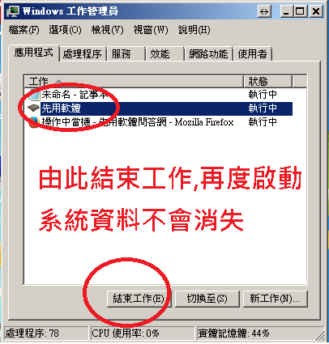

今天作業時出現如圖當機.點擊X與確定都無法關閉.只能強制關閉程式.
請幫忙找答案.前次遇到正是人多時.現場一團混亂.十幾張未出餐單據全部消失.
混亂中忘記拍照.今天又出現了.

麻煩您了.
今天作業時出現如圖當機.點擊X與確定都無法關閉.只能強制關閉程式.
請幫忙找答案.前次遇到正是人多時.現場一團混亂.十幾張未出餐單據全部消失.
混亂中忘記拍照.今天又出現了.

麻煩您了.
您好
此錯誤訊息是記憶體資料錯誤,造成原因有可能是硬體不穩定也有可能是軟體問題,沒有詳細的操作步驟引發該錯誤很難知道切確原因
針對此問題 站長做了些補救型的修正,如在工作管理員結束或工作列關閉視窗先用系統,再度啟動時資料並不會消失,新版程式已經上傳,請至首頁下載更新

